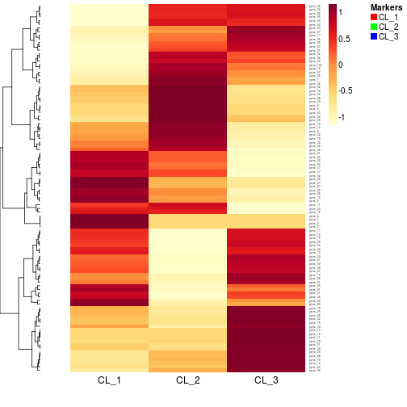
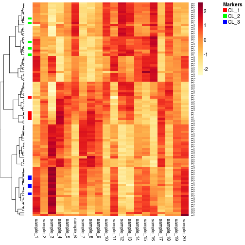
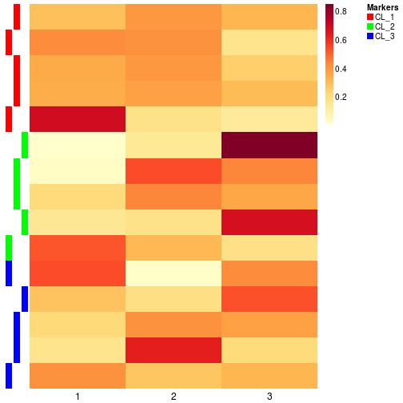
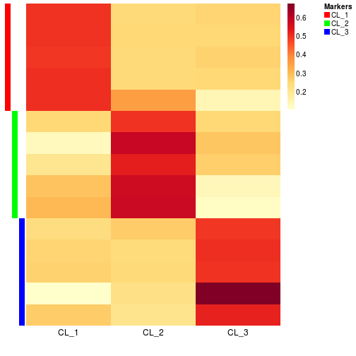
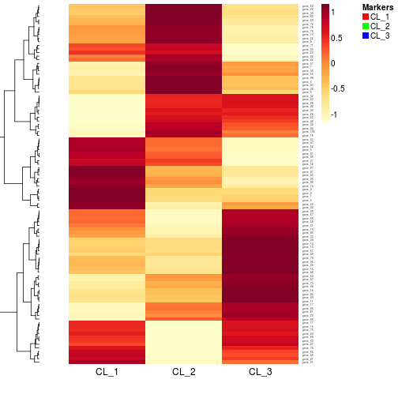

markermap(object, data, ...)
S4 (MarkerList,matrix)
`markermap`(object, data, annCol = NA, annColors = NA, annRow = NA, view = "split",
subsetRow = NULL, scale = "row", color = "YlOrRd:100", Rowv = TRUE, Colv = NA,
distfun = "correlation", hclustfun = "average", ...)
basismarkermap(object, data, scale = "r1", view = "predict", subsetRow = TRUE, Rowv = NA,
labRow = NA, ...)
MarkerList objectaheatmap, but if subsetRow=TRUE,
then the heatmap is limited to the markers only.grid.text, see
gpar.ExpressionSet
object, in which case the phenotypic data is used
(pData(eset)). Character or integer vectors are
converted and displayed as factors. Unnamed tracks are
internally renamed into Xi, with i being
incremented for each unamed track, across both column and
row annotation tracks. For each track, if no
corresponding colour is specified in argument
annColors, a palette or a ramp is automatically
computed and named after the track's name.annCol apply."row": center and standardize each row separately
to row Z-scores "column": center and
standardize each column separately to column Z-scores
"r1": scale each row to sum up to one "c1": scale each column to sum up to one "none": no scaling rev(sequential_hcl(2, h = x, l =
c(50, 95))). Other values are concatenated with the grey
colour '#F1F1F1'. TRUE or NULL (to be
consistent with heatmap): compute a
dendrogram from hierarchical clustering using the
distance and clustering methods distfun and
hclustfun.
NA: disable any ordering. In this case, and
if not otherwise specified with argument
revC=FALSE, the heatmap shows the input matrix
with the rows in their original order, with the first row
on top to the last row at the bottom. Note that this
differ from the behaviour or heatmap, but
seemed to be a more sensible choice when vizualizing a
matrix without reordering.
nrow(x)), that specifies the row
order. As in the case Rowv=NA, the ordered matrix
is shown first row on top, last row at the bottom.
distfun, hclustfun
and reorderfun when clustering the rows (see the
respective argument descriptions for a list of accepted
values). If Rowv has no names, then the first
element is used for distfun, the second (if
present) is used for hclustfun, and the third (if
present) is used for reorderfun.
d by
reorderfun(d, Rowv).
FALSE: the dendrogram is computed
using methods distfun, hclustfun, and
reorderfun but is not shown.
treeheight. Rowv
(modulo the expected length for vector specifications),
and allow specifying the
distance/clustering/ordering/display parameters to be
used for the columns only. Colv may also be
set to "Rowv", in which case the dendrogram or
ordering specifications applied to the rows are also
applied to the columns. Note that this is allowed only
for square input matrices, and that the row ordering is
in this case by default reversed (revC=TRUE) to
obtain the diagonal in the standard way (from top-left to
bottom-right). See argument Rowv for other
possible values.data is added, and markers are
shown on the track associated with the column
corresponding to its maximum value. The function markermap draws a heatmap of a
reference expression data (e.g., the expression matrix
from pure samples or estimated cell-specific signatures),
where marker are annotated by colored bands on the
left-hand side of the heatmap.
basismarkermap calls markermap with
arguments tuned so that: no column reordering is
performed, the rows are scaled to sum up to one, the
heatmap only shows marker expression values, and the
markers are placed according to their most expressing
estimated signature. This view is meant to help in
assessing the validity of deconvolution results, when
known markers are available: ideally marker row
annotations should be composed of monochrome monoblocks.
Argument view controls the way markers are
annotated. On all views, markers are coloured according
to their type, defined by the element of object in
which they appear. Each couloured tick/cell corresponds
to a different marker position.
The following views are available:
data is added, showing the position
of each marker in the most expressing column. When
data is a basis matrix obtained from
deconvolution, this view is useful to check how known
cell type markers (the coulours) map on estimated
signatures (the annotation columns). signature(object = "MarkerList",
data = "matrix"): Workhorse method is for
markermap.
signature(object = "MarkerList",
data = "ExpressionSet"): The method markermap for
ExpressionSet objects calls the main
markermap method on the expression matrix
exprs(object).
signature(object = "MarkerList",
data = "NMF"): The method markermap for
NMF objects calls the main markermap method
on the basis matrix basis(object).
signature(object = "MarkerList",
data = "NMFfitX"): The method markermap for
NMFfitX objects calls the main markermap
method on the best fit fit(object).
signature(object = "MatrixData",
data = "ANY"): This method extracts and plots a list of
markers from a set of basis signature matrix (in
object), where each feature is associated with the
most-expressing signature.
x <- rmix(3, 100, 20)m <- getMarkers(x)markermap(m, basis(x))
markermap(m, x, view='single')
basismarkermap(m, rnmf(3, x))
# after real deconvolutionres <- ged(x, coef(x), 'csSAM')basismarkermap(m, res)
markermap(m, res, view='split')